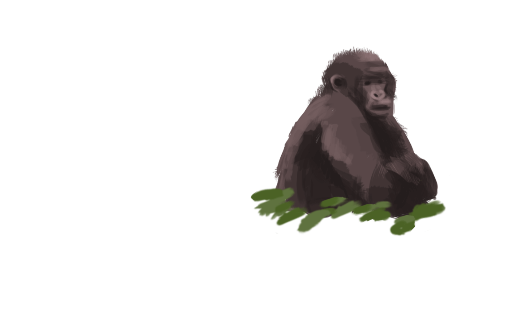
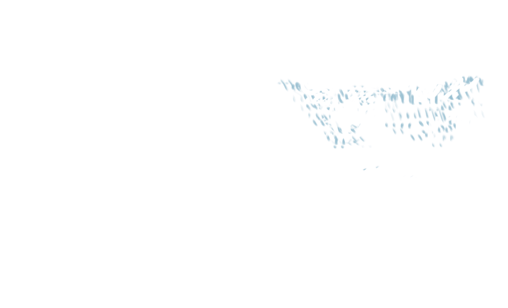
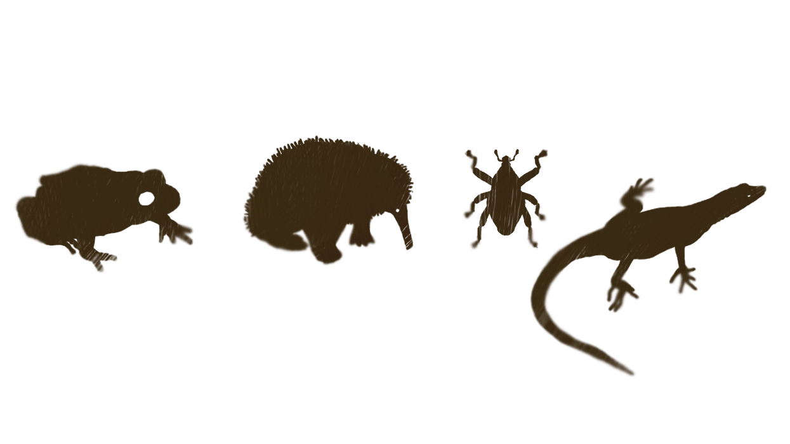
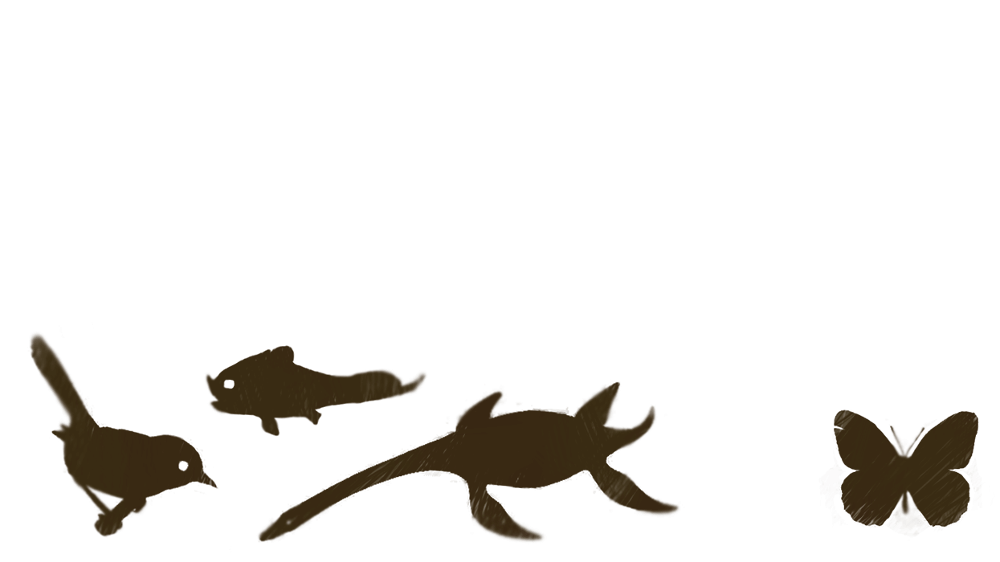

Follow in the footsteps of
Sir David
Attenborough
He is one of the world's most influential naturalists, a broadcaster and educator


His first major appearance was in nature documentary Zoo Quest, about animal collector trips for the London Zoo

In an incredible career spanning 7 decades, he has shown us how wonderful our planet and its inhabitants are


He has shared unforgettable moments of joy and invaluable knowledge with us


Many plant and animal species were named after him, including a dinosaur



His work has inspired generations of viewers and set an example for wildlife filmmakers

“An understanding of the natural world is a source of not only great curiosity, but great fulfilment.”


